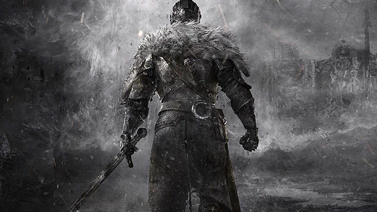

Bearer of the Curse... seek misery.
The Undead Curse, the Darksign. The affliction arises when the fire fades. And the fire is fading. You are afflicted, and seek to cure yourself. Your journey takes you to Drangleic, where it is said the mighty King peered into the essence of a Soul. Bearer of the curse, seek souls. Seek the king. But can he help? Or are you merely a pawn in a familiar, yet distant cycle? How deep will you dig? For if you take the throne, you will link the Fire, sacrificing yourself. But perhaps, with King Vendrick's knowledge, you may transcend the cycle entirely. A cursed, immune to hollowing. An immortal who could shape the world, if they dared.
Go Back